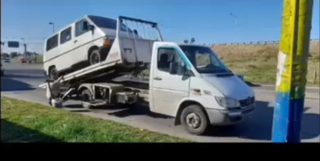

🔧
Auxilio Mecánico
Asistencia ante inconvenientes mecánicos para evaluar la situación y el servicio necesario.
Asistencia para autos, motos y camionetas en Rosario y alrededores. Si el vehículo no puede continuar circulando, también contamos con servicio de grúa y remolque.
Ante un inconveniente con tu vehículo, comunicate con nosotros indicando qué ocurrió y dónde te encontrás.
Asistencia ante inconvenientes mecánicos para evaluar la situación y el servicio necesario.
Si el auto no puede continuar circulando, podemos coordinar su traslado mediante grúa.
Atención las 24 horas en Rosario y alrededores, sujeta a disponibilidad del servicio.
Si el inconveniente no puede resolverse en el lugar, realizamos el traslado del vehículo.

Si tu auto, moto o camioneta presenta un inconveniente, comunicate indicando tu ubicación y qué problema tiene el vehículo. De esta manera podemos evaluar qué tipo de asistencia necesitás.
Atendemos consultas de auxilio vehicular durante las 24 horas en Rosario y alrededores. La disponibilidad puede variar según ubicación y servicios en curso.
Cuando el vehículo necesita ser trasladado, contamos con servicio de grúa para llevarlo al domicilio, taller mecánico u otro destino indicado.
Nuestro servicio permite combinar la asistencia con el traslado del vehículo cuando sea necesario, evitando que tengas que buscar otro servicio por separado.
Trabajamos en Rosario y localidades cercanas. También realizamos traslados de vehículos hacia otros destinos y viajes de larga distancia.
Auxilio mecánico y servicio de grúa para Rosario y alrededores.
📍 Rosario
📍 Localidades de los alrededores
🕐 Atención 24 horas
🚗 Auxilio para autos y otros vehículos
🚨 Servicio de grúa y remolque cuando sea necesario
Mandanos tu ubicación y contanos qué problema tiene el vehículo.
← Ver todos nuestros servicios